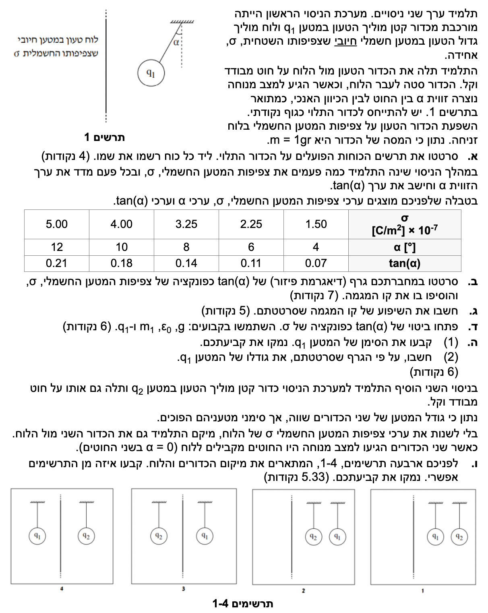

תלמידים יקרים, לפניכם פתרון מפורט, שלב אחר שלב, לשאלה העוסקת בכוח חשמלי, שדה של לוח אינסופי ושיווי משקל של כוחות. ננתח כל סעיף ביסודיות ונבין את ההיגיון הפיזיקלי מאחוריו.

[תמונת השאלה המקורית]לא נמצאה תמונה בשם question-image.png באותה תיקייה.
סעיף א': תרשים כוחות
מה נתון:
מסת הכדור: \( m = 1 \text{ gr} \)
המרה ליחידות תקניות (MKS): נחלק ב-1000 לקבלת קילוגרמים. \( m = 1 \cdot 10^{-3} \text{ kg} \)
תאוצת הכובד: ניקח \( g = 10 \text{ m/s}^2 \) המכוון כלפי מטה.
הכדור נמצא בשיווי משקל (מצב מנוחה), ולכן שקול הכוחות עליו הוא אפס.
מהתרשים ניתן לראות שהכדור סוטה לכיוון הלוח.
מה מחפשים:
לשרטט תרשים של כל הכוחות הפועלים על הכדור התלוי, ולרשום את שמו של כל כוח ליד החץ המייצג אותו.
נוסחאות ועקרונות בשימוש: \( \Sigma \vec{F} = 0 \) (החוק הראשון של ניוטון - שיווי משקל) \( W = mg \) (גודל כוח הכובד)
פתרון צעד-אחר-צעד (תרשים FBD):
על הכדור פועלים שלושה כוחות:
כוח הכובד (\(mg\)): פועל תמיד אנכית כלפי מטה.
מתיחות החוט (\(T\)): פועלת לאורך החוט, מהכדור החוצה (בזווית \( \alpha \) לאנך).
כוח חשמלי (\(F_E\)): מכיוון שהכדור נמשך אל הלוח הטעון (סטייה שמאלה בתרשים המקורי), הכוח החשמלי פועל אופקית לכיוון הלוח.
מסקנה: שלושת הכוחות מאזנים זה את זה ליצירת שיווי משקל.
טיפ מורה: 💡
שימו לב היטב לכיוון הסטייה של הכדור בתרשים המקורי. הכדור סוטה לכיוון הלוח, מה שמעיד על כוח משיכה. לכן, וקטור הכוח החשמלי בתרשים הכוחות שלנו חייב להצביע אופקית שמאלה, אל עבר הלוח.
סעיף ב': שרטוט גרף
מה נתון:
נתונה טבלה עם 5 זוגות נתונים של צפיפות מטען המשטח \( \sigma \) ביחידות של \( [10^{-7} \text{ C/m}^2] \), מול הערך של \( \tan(\alpha) \). (ידוע לנו תיאורטית כי ללא מטען, \( \sigma=0 \), לא יפעל כוח חשמלי ולא תהיה סטייה, ולכן קו המגמה אמור לעבור בראשית הצירים).
מה מחפשים:
לשרטט גרף פיזור (נקודות) שבו ציר ה-y הוא \( \tan(\alpha) \) וציר ה-x הוא \( \sigma \), ולהעביר ביניהן קו מגמה (Trendline).
עקרונות בשימוש:
כללי בניית גרף בפיזיקה: צירי x ו-y ברורים עם תוויות ויחידות מידה, חלוקה שווה של שנתות, סימון ברור של נקודות הנתונים, והעברת קו ישר שמייצג בצורה הטובה ביותר את אוסף הנקודות (לא חייב לעבור דרך כולן).
שרטוט הגרף:
מסקנה: התקבל קו מגמה לינארי שניתן למצוא את שיפועו.
טיפ מורה: 💡
שימו לב כי הנקודות מסתדרות כמעט באופן מושלם על קו ישר. בבחינה, מכיוון שאנו יודעים בוודאות שהגרף חייב לעבור בראשית הצירים (0,0), עגנו את הסרגל בנקודה זו (0,0) ושחקו איתו כך שהקו יעבור קרוב ככל האפשר לשאר הנקודות. נסו לאזן את מספר הנקודות הצפות מעל ומתחת לקו. מומלץ מאוד לעשות שימוש בסרגל שקוף בכדי שתראו בדיוק את כל הנקודות החורגות מן הקו (גם כשהסרגל מסתיר חלקן).
סעיף ג': חישוב שיפוע
מה נתון:
קו המגמה הלינארי ששורטט בסעיף ב'.
מה מחפשים:
לחשב את שיפוע קו המגמה, כולל יחידות מידה.
נבחר שתי נקודות נוחות שנמצאות על קו המגמה. מאחר שקו המגמה עוגן בראשית הצירים, נשתמש בנקודה זו. נבחר נקודה נוספת מהקו ששורטט, למשל ב-\( x = 4.00 \cdot 10^{-7} \) הערך על הקו הוא בקירוב \( 0.175 \):
מלכודת נפוצה: ⚠️
תלמידים רבים מחשבים את השיפוע כשבר עשרוני (למשל \( 0.14/3.5 \)) ושוכחים את כפולת ה-\( 10^{-7} \) שנמצאת בכותרת של ציר ה-x! קראו תמיד את כותרות הצירים עד הסוף, כפולת העשר היא חלק בלתי נפרד מכל מספר על הציר.
סעיף ד': פיתוח ביטוי תיאורטי
מה נתון:
הכדור נמצא בשיווי משקל (מצב מנוחה).
מה מחפשים:
לפתח ביטוי עבור \( \tan(\alpha) \) כפונקציה של \( \sigma \). מותר להשתמש בקבועים ובפרמטרים: \( q_1, m, \varepsilon_0, g \).
נוסחאות ועקרונות בשימוש: \( \Sigma F_x = 0 \) , \( \Sigma F_y = 0 \) (שיווי משקל כוחות בצירים) \( E = \frac{\sigma}{2\varepsilon_0} \) (שדה חשמלי סמוך ללוח טעון אינסופי) \( F = qE \) (קשר בין כוח חשמלי לשדה)
פתרון צעד-אחר-צעד:
שלב 1: משוואות כוחות בצירים
נבחר מערכת צירים: ציר \( x \) אופקי לכיוון הלוח, ציר \( y \) אנכי כלפי מעלה. נרשום את משוואות כוחות (החוק השני של ניוטון למצב התמדה) על סמך תרשים הכוחות מסעיף א':
\[ \Sigma F_y = T \cdot \cos(\alpha) - mg = 0 \quad \Rightarrow \quad T \cdot \cos(\alpha) = mg \]
\[ \Sigma F_x = T \cdot \sin(\alpha) - F_E = 0 \quad \Rightarrow \quad T \cdot \sin(\alpha) = F_E \]
שלב 2: חלוקת המשוואות
נחלק את משוואת ציר ה-\( x \) במשוואת ציר ה-\( y \) כדי לבודד את הזווית ולהיפטר מהמתיחות \( T \):
הביטוי הסופי (מסודר כתלות לינארית ב- \(\sigma\)): \( \tan(\alpha) = \left( \frac{|q_1|}{2\varepsilon_0 mg} \right) \cdot \sigma \).
טיפ מורה: 💡
בפיזיקה אנחנו תמיד מחפשים קשר בין הפיתוח התיאורטי לבין הגרף. שימו לב שהביטוי שקיבלנו הוא מהצורה של פונקציה לינארית \( y = m_{slope} \cdot x \). ה-\( y \) שלנו הוא \( \tan(\alpha) \), ה-\( x \) שלנו הוא \( \sigma \), וכל מה שבתוך הסוגריים הוא בעצם השיפוע התיאורטי של הגרף! תובנה זו תשמש אותנו בסעיף הבא.
מתרשים המערכת המקורי אנו רואים שהכדור סוטה לכיוון הלוח, כלומר פועל עליו כוח משיכה חשמלי מצד הלוח. מכיוון שנתון שהלוח טעון במטען חיובי, והכדור נמשך אליו - חובה עליו להיות טעון במטען מנוגד.
מסקנה: סימנו של המטען \( q_1 \) הוא שלילי (\( q_1 < 0 \)).
חלק (2) - חישוב גודל המטען:
נשווה בין השיפוע שקיבלנו מהגרף בסעיף ג' לבין מקדם ה-\( \sigma \) במשוואה התיאורטית מסעיף ד':
גודל המטען (ב-3 ספרות מהותיות): \( |q_1| = 7.75 \cdot 10^{-8} \text{ C} \).
סעיף ו': ניתוח שיווי משקל עם שני כדורים
מה נתון:
נוסף כדור נוסף למערכת עם מטען \( q_2 \).
המטענים שווים בגודלם אך הפוכים בסימנם. לכן \( q_1 \) שלילי (מצאנו) ו-\( q_2 \) חיובי.
במצב מנוחה, החוטים מקבילים ללוח. כלומר זווית הסטייה היא \( \alpha = 0 \).
מה מחפשים:
לקבוע איזה מארבעת התרשימים (1-4) מתאר את מיקום הכדורים והלוח בצורה אפשרית פיזיקלית, ולנמק.
עקרונות בשימוש:
מאחר והחוטים אנכיים (\( \alpha = 0 \)), אין מתיחות בציר האופקי. לכן, שקול הכוחות החשמליים בציר האופקי על כל כדור חייב להיות אפס: \( \Sigma F_{x, electric} = 0 \).
כוח השדה של לוח אינסופי לא תלוי במרחק מהלוח: \( E = \text{const} \).
ניתוח הכוחות ופסילת תרשימים:
ננתח את הכוחות הפועלים אופקית על כל כדור. על כל כדור פועלים שני כוחות אופקיים בלבד: משיכה/דחייה מהלוח, ומשיכה בין שני הכדורים (כי הם בעלי סימנים מנוגדים).
עבור הכדור השלילי (\( q_1 \)): הלוח (החיובי) מושך אותו לכיוונו. כדי שהכדור יישאר בשיווי משקל במקום, הכדור החיובי (\( q_2 \)) שמושך אותו אליו, חייב להיות ממוקם בצד הנגדי ללוח ביחס ל-\( q_1 \). כלומר, \( q_1 \) חייב להיות בין הלוח לבין \( q_2 \).
עבור הכדור החיובי (\( q_2 \)): הלוח (החיובי) דוחה אותו החוצה (הרחק מהלוח). כדי שהכדור יישאר בשיווי משקל, הכדור השלילי (\( q_1 \)) שמושך אותו אליו, חייב להיות ממוקם לכיוון הלוח. זה מתיישב במדויק עם המסקנה הקודמת.
מכאן אנו מסיקים ששני הכדורים חייבים להימצא באותו צד של הלוח, כאשר הכדור השלילי (\( q_1 \)) קרוב יותר ללוח, והכדור החיובי (\( q_2 \)) רחוק יותר. נפסול את האחרים:
תרשים 4 ו-3: הכדורים נמצאים משני עברי הלוח השונים. במצב זה הכוחות אינם יכולים להתאזן (למשל בתרשים 4, \( q_1 \) נמשך ימינה ללוח וגם נמשך ימינה ל-\( q_2 \)).
תרשים 2: \( q_2 \) קרוב יותר ללוח. במצב זה \( q_2 \) נדחה ימינה מהלוח, וגם נמשך ימינה אל \( q_1 \). לא יכול להיות בשיווי משקל.
התרשים היחיד האפשרי הוא תרשים 1. (שני הכדורים מימין ללוח, ו-\( q_1 \) קרוב יותר אליו).
טיפ מורה: 💡
בגישה לשאלות עם מספר גופים, הסוד הוא לבודד כל גוף ולנתח אותו בנפרד. במקום לנסות לנתח את המערכת כולה בבת אחת, תמיד שרטטו לעצמכם (אפילו כתרשים כוחות קטן על טיוטה בצד) את החיצים האופקיים הפועלים על המטען הראשון, ואז על המטען השני. ברגע שמפרקים את הבעיה לגופים בודדים ובודקים את כיווני המשיכה והדחייה עבור כל אחד מהם, קל מאוד לראות אילו תרשימים יוצרים סתירה (שני כוחות לאותו כיוון) ואילו מאפשרים איזון וביטול כוחות.
נוסח השאלה המקורית
[תמונת השאלה המקורית]לא נמצאה תמונה בשם question-image.png.